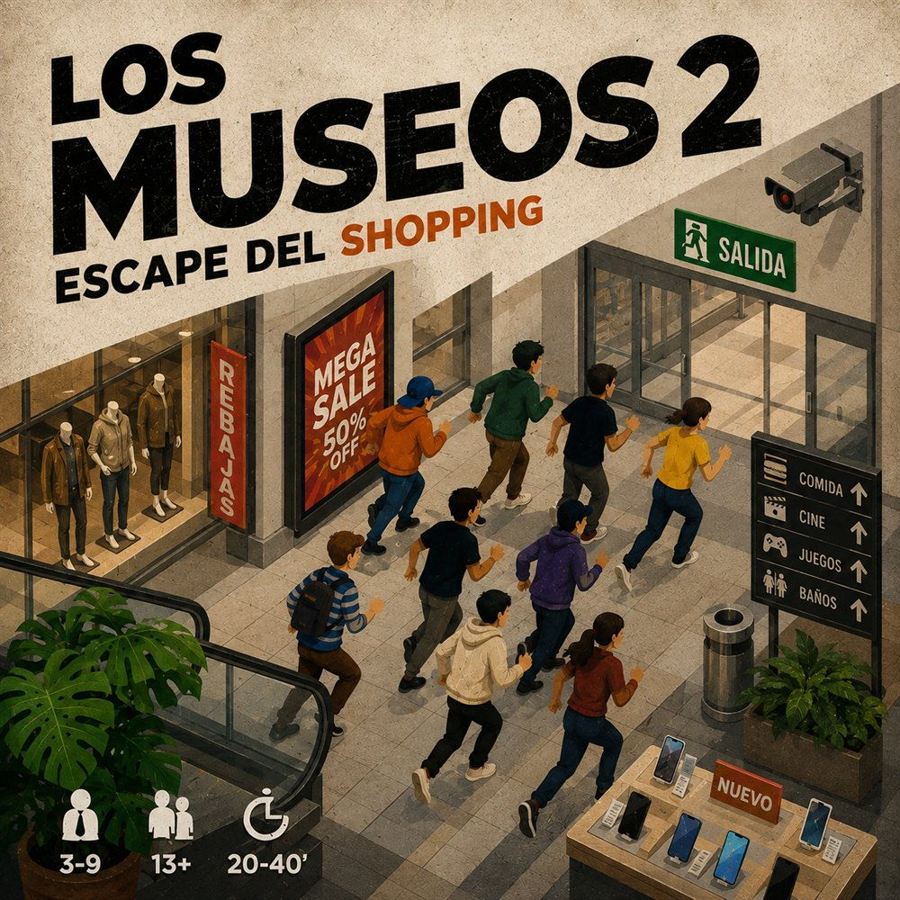
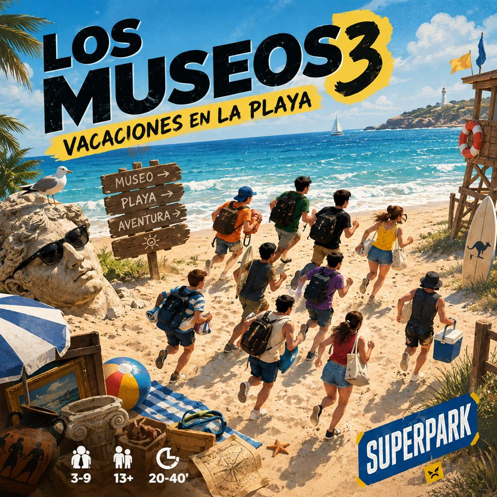
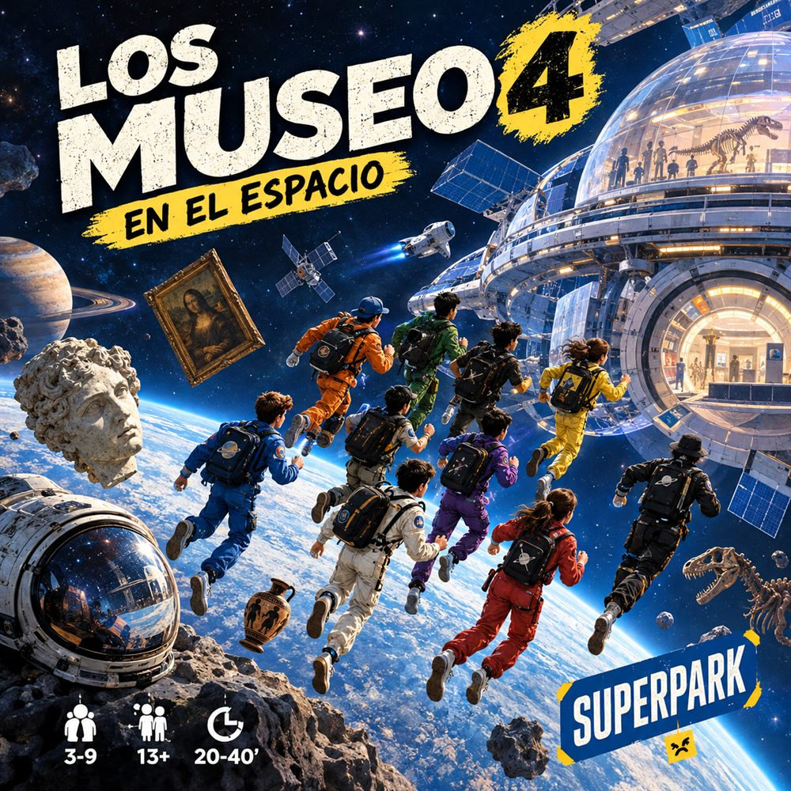
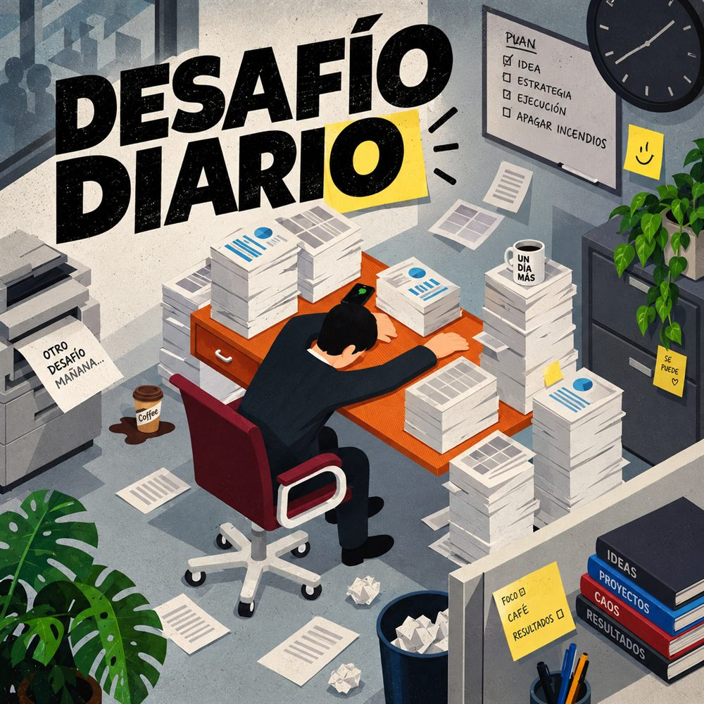

Los
Museos
·
—
—
Cómo se juega
Ayuda
Salas
Lo que va pasando
Editor del nivel
Elegí una
herramienta
y hacé clic en el tablero. Con
Pared
, el clic va en el borde entre dos casillas.
Limpiar paredes
Restaurar nivel
Copiar código
Copiar los diez niveles
Los Museos
10 salas · listo para jugar

🔒 Cerrado
Los Museos 2
Escape del shopping

🔒 Cerrado
Los Museos 3
Vacaciones en la playa

🔒 Cerrado
Los Museos 4
En el espacio
🔒 Cerrado
Los Museos 5
Escapan de la montaña

Desafío diario
Una sala nueva por día
¿Quién entra al museo?
Entrar
Los Museos
×